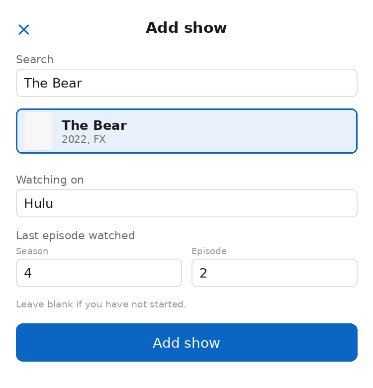
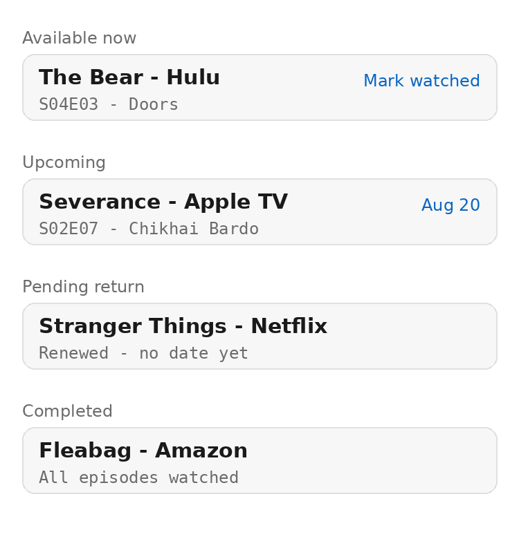
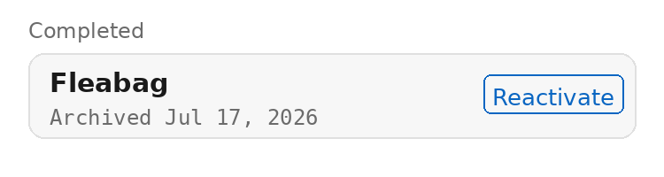
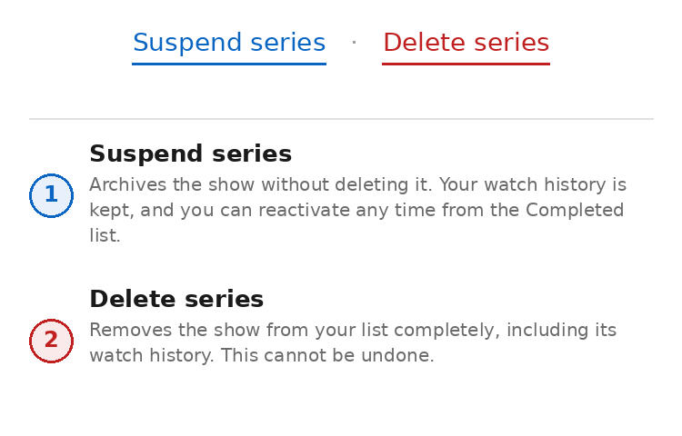

Everything below happens in your own browser — nothing to install, nothing to configure.

The add show screen
Every show you track lands in exactly one of four groups, based on what's happening with it right now:
The next episode you haven't watched has already aired. Tap "Mark watched" and it moves straight to the following episode.
The next episode has a known future air date. Shows a countdown so you know when to check back.
You're caught up, the show has been renewed, but no return date has been announced yet.
You've watched every episode and the series itself has ended — or you've suspended it (see below).

One example show in each category
Want to stop tracking a show without losing your place or deleting your history? Open the show's detail screen and tap Suspend series.

An archived show, with a Reactivate button
To pick a suspended show back up, tap Reactivate on its row (or "Reactivate series" on its detail screen). It returns to whichever category its actual progress puts it in — exactly as if it had never been suspended.
Deleting is different from suspending: it's permanent. On the show's detail screen, Suspend series and Delete series sit next to each other — it's worth knowing which is which before you tap.

Suspend keeps your history. Delete removes it for good.
Tapping Delete series immediately removes the show and its watch history from your list. There's no confirmation step and no undo — if you might want the show back later, use Suspend instead.